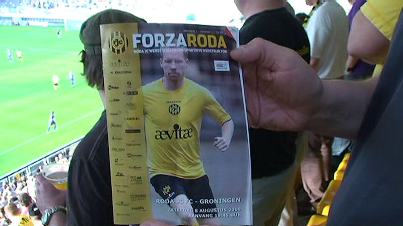
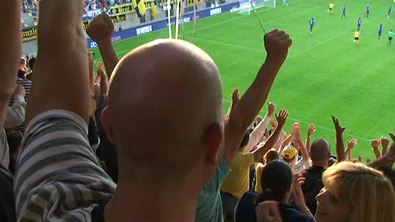

Voordat de wedstrijd begint is er een afscheid van Sekou Cissé en Marcel
Meeuwis.
De eerste thuiswedstrijd in de nieuwe competitie-ronde. Dat Roda erbij is
voelt al als een overwinning.
Glück auf Roda, deze koempels zullen nooit afdalen...
Het Aevitae-doek op Oost.
Een versche pappa (links) in het vruchtbare Z16-vak.

De programmaboekjes zijn niet meer gratis. Voor 50 cent lees je mee...
Bodor kopt hoog door naar Janssen die aflegt op Hadouir...
..die vervolgens afdrukt: 1-0, (19').

De eerste vrolijcke foto in het PLS sinds tijden.
De nieuwe sfeergroep SCR op Oost.
Roda laat Groningen in haar spel komen. Het onvermijdelijke blijft niet uit.
Van der Laak kopt op Lovre die voorbij Castro knalt: 1-1, (30').
Vroeg in de tweede helft is er rood voor Holla na een fikse overtreding op
Junker.
Kah verstapte zich en viel een kwartier voor tijd geblesseerd uit.
A. Hadouir
W. Janssen 65' L. Delorge
P. Kah74' R. Vormer
M. Junker
M. De Jong
E. Linssen
E. Addo
D. de Fauw
B. Castro
B. Bodor
A. Sutchuin 65' D. van Tornhout
De Jong liep in de 34e min. een gele kaart op.
Er zijn geen beelden van de Kickoff. Na-praten met collega-supporters in de
omloop is momenteel gezelliger dan in het door knalharde muziek
geteisterde supportershome.